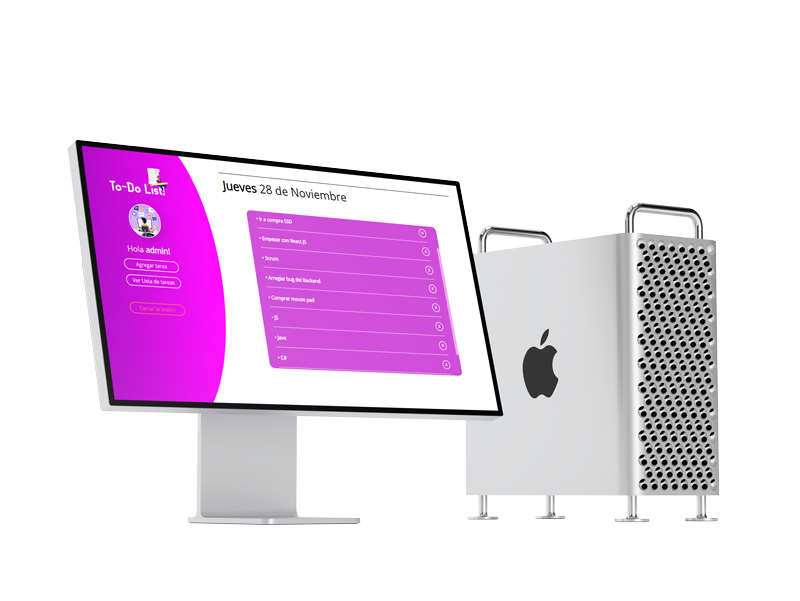

To-do list
To-do list es una sitio web donde puedes recupera tu claridad y tranquilidad sacando todas esas tareas de tu cabeza para ponerlas en tu lista de tareas sin importar dónde te encuentres.
- • HTML5
- • CSS3
- • Javascript
- • PHP
- • MySQL